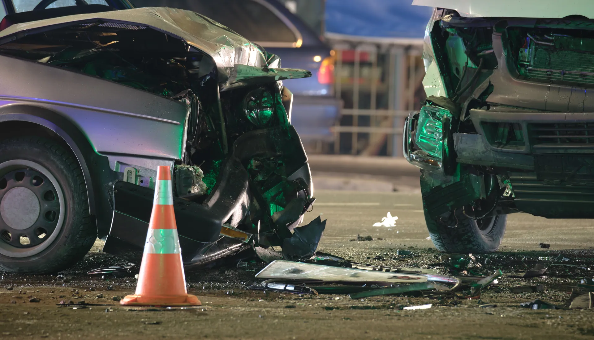
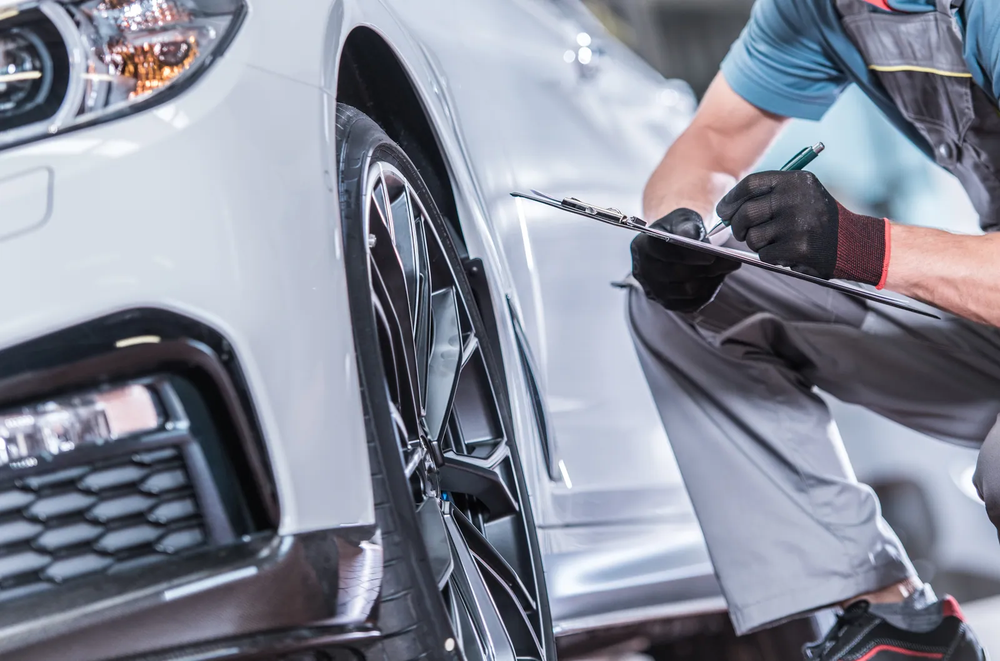
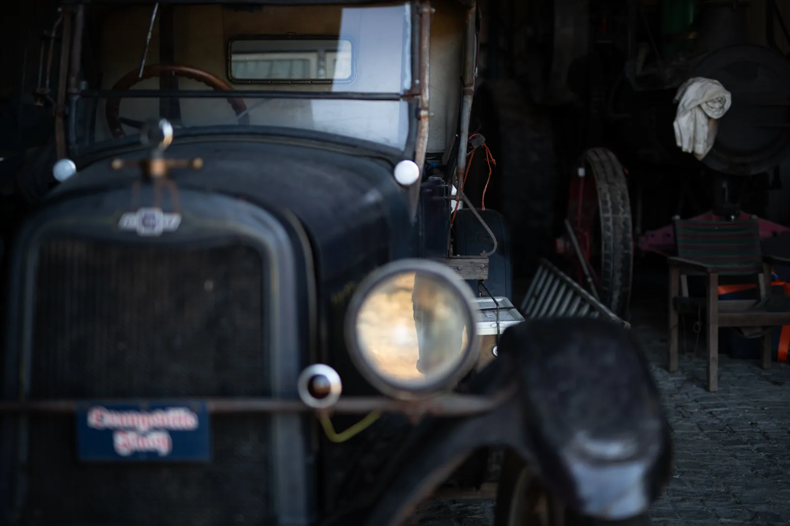
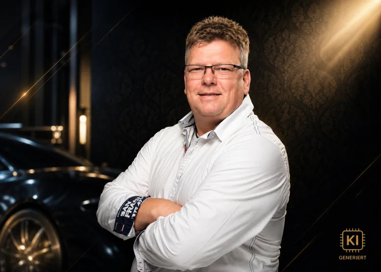

- Unfallgutachten
- Wertgutachten
- Gebrauchtwagencheck
Ihr Schaden.
Ihr Recht.
Ihr Gutachter.
Bei unverschuldetem Unfall trägt die gegnerische Haftpflicht die Kosten. Sie sprechen direkt mit dem Sachverständigen.
Über mich
Nach einem Unfall entscheidet oft die Versicherung, wer Ihren Schaden bewertet. Das muss nicht so sein. Sie dürfen Ihren Sachverständigen frei wählen, und bei unverschuldetem Unfall zahlt die Gegenseite.
Ich bin Hans Schäning, Kfz-Sachverständiger in Mudersbach. Ausgebildet beim VSD e.V. zum Schaden- und Wertgutachter, berufshaftpflichtversichert, im Rücken eine Kfz-Meisterwerkstatt und ein Fachanwalt für Verkehrsrecht.
Gerade passiert
Vier Dinge, die jetzt zählen. Bevor Sie irgendetwas entscheiden.
UNFALL

Unfallgutachten
Reparaturweg nach Herstellervorgaben, Reparaturkosten, merkantile Wertminderung, Wiederbeschaffungs- und Restwert, Reparaturdauer und Nutzungsausfall. Vollständig dokumentiert, damit Sie bekommen, was Ihnen zusteht.
Weitere Leistungen
Nicht nur nach dem Unfall. Wert, Beweis und der Blick aufs Fahrzeug, bevor Sie unterschreiben.
Für jeden Schaden am Fahrzeug, unabhängig von der Ursache. Nachvollziehbar aufgebaut, damit das Gutachten auch vor Gericht trägt.
Der belastbare Wert Ihres Fahrzeugs. Bei Verkauf, Erbschaft, Trennung, Leasingrückgabe oder Liebhaberfahrzeugen.
Vor dem Kauf oder Verkauf. Ich schaue mir das Fahrzeug an, bevor Sie unterschreiben, und sage Ihnen, was Sie wirklich vor sich haben.
Dokumentiert den Zustand Ihres Fahrzeugs zu einem Zeitpunkt. Damit später nachweisbar bleibt, welcher Schaden wann bestand.
Für kleinere Schäden, bei denen sich ein volles Gutachten nicht lohnt. Sachlich gerechnet, ohne Luft nach oben oder unten.
Die Kostenfrage
Was kostet Sie das Gutachten? Nichts.
Bei einem unverschuldeten Unfall zahlt die Haftpflichtversicherung des Unfallgegners. Grundlage ist Paragraph 249 Absatz 2 BGB, bestätigt durch das BGH-Urteil VI ZR 67/06. Sie gehen nicht in Vorleistung, die Abrechnung läuft über eine Abtretung direkt an mich.

Weitere Gutachten
Nicht jeder Fall ist ein Unfall.
Manchmal geht es nicht um Schuld, sondern um einen Wert. Um eine Zahl, die trägt, wenn jemand nachfragt.
Ablauf
In vier Schritten zum Gutachten
Ihr Sachverständiger
Hans Schäning
„Bei mir sprechen Sie direkt mit dem Sachverständigen. Ohne Callcenter, ohne Weitergabe, ohne Umwege."
Hinter jedem Schaden steht eine Geschichte, und meistens auch Unsicherheit. Genau da fange ich an. Ich arbeite neutral, objektiv und weisungsfrei, ohne Bindung an Versicherungen. Wenn ein Gutachten sich nicht lohnt, sage ich Ihnen das auch.

Einzugsgebiet
Kfz-Gutachter in Mudersbach, Betzdorf, Kirchen, Wissen und Siegen
Fragen
Wer zahlt den Kfz-Gutachter nach einem Unfall?
Darf ich meinen Gutachter selbst aussuchen?
Die Versicherung hat schon einen Gutachter geschickt. Was jetzt?
Ab welchem Schaden lohnt sich ein Gutachten?
Was steht in einem Unfallgutachten?
Was ist der Unterschied zwischen Gutachten und Kostenvoranschlag?
Brauche ich zusätzlich einen Anwalt?
Arbeiten Sie auch für Versicherungen?
Ich habe den Unfall selbst verschuldet. Können Sie trotzdem helfen?
Schaden melden
Am schnellsten geht es telefonisch.
Sie erreichen mich direkt, ohne Zwischenstation. Wenn Ihnen schreiben lieber ist, melde ich mich zurück.
KFZ-Check57, Hans Albert SchäningSiegstraße 2, 57555 Mudersbach
info@kfz-check57.de
Mo bis Fr 8 bis 18 Uhr, Sa 8 bis 15 Uhr
Termine außerhalb der Geschäftszeiten nach vorheriger Absprache.